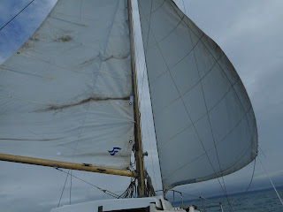
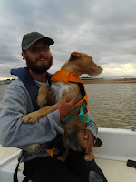
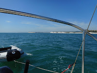
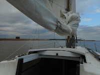
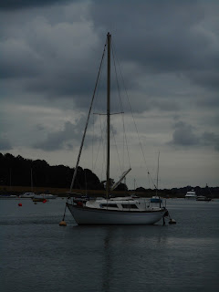

There’s a passage in John Clare's Autobiography when he describes the day he wandered away from his native village of Helpstone to explore the yellow furze heath of Emmonsales. It was a distant, alluring prospect. He expected that, when he reached the horizon, he would gaze over the edge of the world.‘So I eagerly wandered on and rambled along the furze the
whole day until I got out of my knowledge when the very wild flowers seemed to
forget me and I imagined they were the inhabitants of new countrys the very sun
seemed to be a new one and shining in a different quarter of the sky still I
felt no fear my wonder-seeking happiness had no room for it I was finding new wonders
every minute & was walking in a new world and expecting the worlds end bye
and bye but it never came often wondering to myself that I had not found the
edge of the old one the sky still touched the ground in the distance & my
childish wisdom was puzzled in perplexities night came on before I had time to
fancy the morning was by’
If there was ever a passage from which punctuation is so appropriately
absent, this must be it. When Clare revisited the heath in his poem ‘The Mores’,
he finds it chopped up by the implementation of the Enclosure Act:
‘Fence now meets fences in owners’ little bounds
Of field and meadow large as garden grounds
In little parcels little minds to please’
{kind=link}
My Yachting
Monthly pile of books to review is loaded with instruction manuals – I can’t shirk them for much longer. September is the month when
many people sign up for Day Skipper or Yachtmaster courses to systematise
their sailing knowledge and gain certificates of competence.
I’ve done them too. I know that for the
Safety of Life at Sea (our lives) we should write passage plans before we set
out; chop up our voyages with waypoints and courses-to-steer and tidal gates
which must be achieved at optimum moments. Then, if we find ourselves falling
behind – maybe the wind has eased or the tide has turned against us, we hurry to put our
engines on – for all the world as if we had a train to catch.
John Clare (1793-1864) didn’t only live through the period of the Agricultural Enclosure Acts, he also lived when public clocks were standardised From 1847 the Railway Clearing house officially adopted Greenwich Mean Time across Britain to end the anomalies of local time whereby there might be several minutes different between neighbouring cities such as Cardiff and Bristol. I doubt this ever troubled Clare as I don't suppose he used a watch or caught a train. At sea the C17th astronomers such as John Flamsteed had already established a formula to convert 'solar time' to 'mean time'. The brilliant C18th makers of sextants and chronometers proved that the angle of the planets calculated against the totally conceptual Prime Meridian could provide navigators with a precise location and save them from shipwreck. Remember Admiral Sir Cloudsley Shovell’s fleet running onto the rocks by the Isles of Scilly in 1707 - 2000 men died. There’s no romance about being lost at sea. Having sat in navigation classes drawing laborious geometric shapes, or squinting hopelessly along a sextant before recoiling from the computation tables, I count GPS as the greatest blessing of my sailing lifetime.
Last month I went sailing with son Bertie, his dog Solo and their well-named Jupiter (bringer of jollity). I was introduced
to the wonders of Navionics where (it seems) you can simply draw lines on your mobile phone
and sail along them avoiding rocks, reefs and shoals. You become a questing chevron, always instantly locatable on the electronic chart. An end to maritime disorientation? That wasn't what I found.
 |
| Bertie & Solo |
{kind=link}
Jupiter had been purchased in Dorset and needed to make her way to her new home on the Deben in Suffolk. I joined her at Southsea Marina where she'd taken refuge from some days of rough weather. She’s a relatively elderly yacht (1972) and while her hull remains strong, her sails do not. Bertie had the clear instruction from the Portland sailmakers that he was to sail in light winds only. That suited me fine. It was a long time since I'd done any passage-making; I was missing the deep familiarity of Peter Duck and as a lifelong East Coast sailor approached the South Coast with the deepest suspicion - we have a tendency to tell each other lurid tales about what they do 'down there'.
I was reassured of course as soon as I saw Jupiter's traditional hull shape and settled myself and my kit into her homely quarter berth. Her outboard engine was and remains a mystery, even to itself, I suspect. As our voyage progressed it developed a disconcerting habit of failing intermittently, sometimes at the most inopportune moments. Our exit from Dover harbour with a DFDS ferry
bearing down on us, no sails up, halyards jammed, sudden silence from the engine and the white cliffs horribly
close, isn’t an experience I’d wish to repeat. Yet when I look back at my galaxy of
happiest times there are some when the failure of the engine was a positive
joy. There was a moment, for instance, when
it failed as we were entering a well-marked sea passage called the Looe
Channel. We’d had an early, slightly bumpy start crossing Chichester harbour bar
on the ebb but winds were fair and Bertie’s navigation good so, when the
outboard switched itself off, it was extraordinarily liberating to know we had no choice but to sail. And to keep on sailing until we reached our destination, whatever time that might be. The sun was out, the wind was fair, we would wander on for as long as it took. Time was no longer ours to control. I think one goes a little mad at sea as the perpetual motion jiggles the brain inside its bony skull.
Marinas however impose a conformity. You must, we discovered, enter and manoeuvre under engine -- even if you haven't got one. Not just because it’s easier in tight spaces but because there are rules, insurance, health and safety. In my part of the world, there are rivers you can run into if you're engineless, drop your anchor, drop your sails and consider your next move. As strangers on the South Coast we discovered long stretches where marinas are unavoidable if you're only sailing in daylight hours (Jupiter had no navigation lights.) We had to be towed in, apologetically, twice.
This blog post isn’t an account of our nautical
adventures, it’s a a somewhat astonished statement how extraordinary, how
liberating and refreshing it was to spend long days at sea, sailing and ‘out of my
knowledge’. The south coast is profoundly, geologically, other. It has cliffs, depths, different colourations. The constrictions of
the channel as the French and English coasts lunge towards each other funnels the winds and tides: there are the jutting
headlands where waves battle and currents swirl. I felt as foreign as John
Clare on Emmonsales Heath.
 |
| The Seven Sisters |
{kind=link}
There was one moment, however, which I probably can’t describe. We were approaching Beachy Head, sailing east towards home, the only slight flaw – many hours past - being the way the rising sun had twinkled through the holes in Jupiter’s genoa. I turned to look back down Channel, westwards, the direction past generations of sailors would have looked as they set out, going where? for how long? never to return?
Unexpectedly I felt something deeply resonant, a surge of patriotism and protectiveness, a deep love for 'my' country:
A sceptered isle set in a silver sea
Which serves it as the office of a wall
Or as a moat defensive to a house
Against the envy of less happier lands.
This blessed plot, this earth this realm, this England' – etc.
Sorry – I’m merely recording how I felt then. It shocked me too - but if you read on in John of Gaunt's speech (Richard II, Act 2 scene i) you'll remember that all this rhetoric is to highlight how wrong things have gone in 'this other Eden, demi-Paradise'.
A few days later, when we were battering our
way into Dover and I was bewailing the apparently constant turbulence outside
that harbour wall, someone told me that I needed to remember the number of war
wrecks littering the seabed here. Dover is grim, Dover Castle is grim. We were
glad to get away the following morning – DFDS near-misses or not.
 |
| Entering the River Deben |
{kind=link}
When John Clare returned into his own fields he found them changed, ‘I did not know them everything looked so different.’ Across the Thames Estuary from Kent to Essex can be further than France to England. When we finally re-entered the Deben (past a distinctly un-threatening Martello Tower) the river was the same but I felt different. It was as if the disorientation of the sea had reminded me of certain truths about myself -- who I am, as well as where I live. After a long period of inability to write fiction, I began a new story straightaway.
 |
| Jupiter in Woodbridge |
{kind=link}